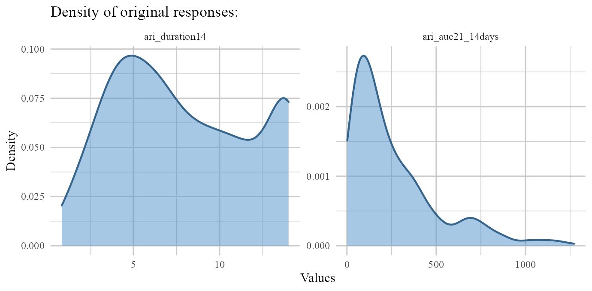
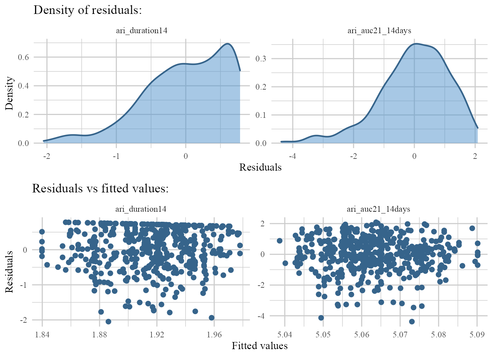
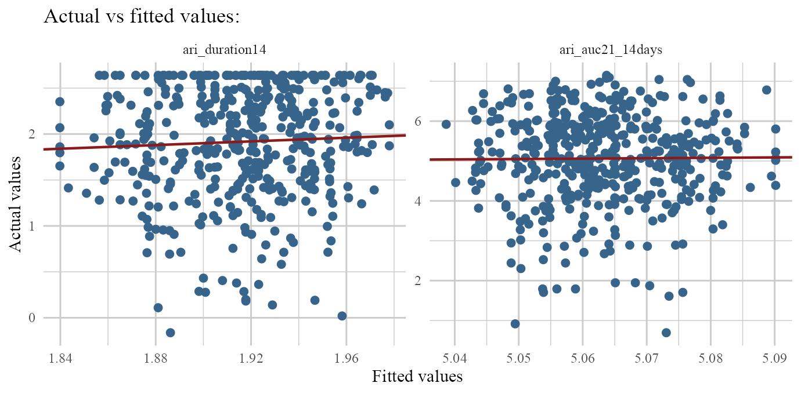

BC2.RmdBC2 is a package with basic tools for fitting and evaluating multivariate semi-continuous proportionally constrained two-part fixed effects models. This model is useful when we are facing continuous responses with generally more than 50% zero observations which is called semi-continuous data.
BC2 views these responses as the result of a logistic process which determines whether the response is zero or not and a positive part which investigates the relations on non-zero values of the responses where coefficients in all parts are related through constraints.
This model is constructed based on the following log-likelihood function:
\[l(\theta)=-n_1 log(2\pi)-\frac{n_1}{2}log(\sigma_1^2)-\frac{n_1}{2}log(\sigma_2^2)-\frac{n_1}{2}log(1-\rho^2)-\] \[\sum_{d_all}{log[1+e^{a_0+x_i^T\beta}]}+n_1a_0+\sum_{d+}{x_i^T\beta}-\]
\[\frac{1}{2\sigma_1^2(1-\rho^2)}\sum_{d+}{(y_{i1}-a_1-b_1x_i^T\beta)^2}-\]
\[\frac{1}{2\sigma_2^2(1-\rho^2)}\sum_{d+}{(y_{i2}-a_2-b_2x_i^T\beta)^2}+\]
\[\frac{\rho}{\sigma_1\sigma_2(1-\rho^2)}\sum_{d+}{(y_{i1}-a_1-b_1x_i^T\beta)(y_{i2}-a_2-b_2x_i^T\beta)}\]
For detailed information read:
library(BC2)
#> Loading required package: tidyverse
#> -- Attaching packages --------------------------------------- tidyverse 1.3.1 --
#> v ggplot2 3.3.3 v purrr 0.3.4
#> v tibble 3.1.2 v dplyr 1.0.6
#> v tidyr 1.1.3 v stringr 1.4.0
#> v readr 1.4.0 v forcats 0.5.1
#> -- Conflicts ------------------------------------------ tidyverse_conflicts() --
#> x dplyr::filter() masks stats::filter()
#> x dplyr::lag() masks stats::lag()
#> Loading required package: magrittr
#>
#> Attaching package: 'magrittr'
#> The following object is masked from 'package:purrr':
#>
#> set_names
#> The following object is masked from 'package:tidyr':
#>
#> extractMeditation or Exercise for Preventing Acute Respiratory Infection (MEPARI-2) is a comprehensive trial conducted at University of Wisconsin, School of Medicine and Public Health to investigate the effect of meditation and exercise on severity and duration of Acute Respiratory Infection (ARI).
Direct links for information and data-sets of this trial are:
Direct link to the ARI .csv file
This data-set is also available in BC2 and it can be accessed after loading the package:
ARI
#> # A tibble: 715 x 48
#> mepari cohort_new cohort participant_id trt_mepari2 trt_group baseline_dt
#> <dbl> <dbl> <dbl> <dbl> <dbl> <chr> <dbl>
#> 1 1 11 1 101 2 2.Meditation 40049
#> 2 1 11 1 102 3 3.Exercise 40049
#> 3 1 11 1 103 1 1.Control 40049
#> 4 1 11 1 103 1 1.Control 40049
#> 5 1 11 1 104 1 1.Control 40049
#> 6 1 11 1 106 2 2.Meditation 40049
#> 7 1 11 1 107 2 2.Meditation 40049
#> 8 1 11 1 108 1 1.Control 40049
#> 9 1 11 1 108 1 1.Control 40049
#> 10 1 11 1 109 3 3.Exercise 40049
#> # ... with 705 more rows, and 41 more variables: exit_dt <dbl>,
#> # last_data_dt <dbl>, dropped_out <dbl>, onstudy_days <dbl>, ari_num <dbl>,
#> # ari_auc <dbl>, ari_duration <dbl>, ari_il8 <dbl>, ari_neutrophils <dbl>,
#> # ari_virus <chr>, ari_viral_wash <chr>, ari_viral_swab <chr>,
#> # ari_health_care_visits <dbl>, ari_missed_work_days <dbl>,
#> # ari_missed_work_ndays <dbl>, ari_missed_work_nhrs <dbl>,
#> # ari_medprov_nvisits <dbl>, num_classes_taken <dbl>, b_age <dbl>, sex <dbl>,
#> # b_current_smoker <dbl>, ethnicity <dbl>, b_education <dbl>, b_income <dbl>,
#> # b_bmi <dbl>, num_ari <dbl>, b_ipaq_score <dbl>, b_maas_score <dbl>,
#> # b_panas_pos <dbl>, b_panas_neg <dbl>, b_psqi_score <dbl>,
#> # b_pss10_score <dbl>, b_sf12_physical <dbl>, b_sf12_mental <dbl>,
#> # b_college <dbl>, race_new <dbl>, b_income50 <dbl>, ari_auc21 <dbl>,
#> # ari_auc21_14days <dbl>, ari_duration14 <dbl>, b_gpaq_score <dbl>In the following topics, we will demonstrate how to use BC2 package to fit BC2 model on the mentioned data-set.
About 36% of the participants didn’t report any kind of ARI so ARI duration & ARI severity for these participants are zero which leads to creation of 2 semi-continuous responses.
The two semi continuous responses for the first & second parts are:
ari_duration14 & ari_auc21_14days.
We want to evaluate the effects of the following variables as our predictors:
age, sex, bmi, trt_group, maas_score for logistic and the model on ari_duration14.
age, sex, bmi, trt_group for the model on ari_auc21_14days.
which are duration of ARI and Severity of ARI respectively.
Note: Responses for participants that did not report any symptoms of ARI were left empty as missing values which we will change them to zero values to make the data suitable for BC2 modeling.
(data <- ARI %>% select(b_age,sex,b_bmi,trt_group,b_maas_score,
b_sf12_physical,ari_duration14,ari_auc21_14days) %>%
mutate_at(c('sex','trt_group'),as.factor) %>%
mutate_at(c('ari_duration14','ari_auc21_14days'),function(x){x[is.na(x)] <- 0 ; return(x)}) %>%
rename_all(~str_remove(.,'b_')))
#> # A tibble: 715 x 8
#> age sex bmi trt_group maas_score sf12_physical ari_duration14
#> <dbl> <fct> <dbl> <fct> <dbl> <dbl> <dbl>
#> 1 67 2 45.2 2.Meditation 5.6 57.5 14
#> 2 51 2 32.4 3.Exercise 5.3 60.2 0
#> 3 55 1 27.1 1.Control 5.7 40.5 2.38
#> 4 55 1 27.1 1.Control 5.7 40.5 5.6
#> 5 65 2 25.7 1.Control 4.7 52.9 0
#> 6 70 2 30.2 2.Meditation 4.3 37.1 0
#> 7 57 2 29.9 2.Meditation 4.1 50.9 3.56
#> 8 57 2 30 1.Control 4.7 56.7 12.0
#> 9 57 2 30 1.Control 4.7 56.7 14
#> 10 52 2 32.8 3.Exercise 3.2 31.8 0
#> # ... with 705 more rows, and 1 more variable: ari_auc21_14days <dbl>let’s take a look at responses distributions.
To check for the normality of original responses we can do:
data %>% select(contains('ari')) %>% map(shapiro.test)
#> $ari_duration14
#>
#> Shapiro-Wilk normality test
#>
#> data: .x[[i]]
#> W = 0.85957, p-value < 2.2e-16
#>
#>
#> $ari_auc21_14days
#>
#> Shapiro-Wilk normality test
#>
#> data: .x[[i]]
#> W = 0.73914, p-value < 2.2e-16As we see, none of the responses were normaly distributed (p-value<0.05).
It is suggested to use some transformations based on procedures like Box-Cox on non-zero responses to create responses with distributions closer to normal (gaussian). For now and for illustraion in this vignette, we gonna stick with logarithmic transformation.
For better predictive performance specially when numerical predictors have very different scales, it’s better to standardize numerical predictors. We gonna leave it for now to stick to the illustration of the fitting process and not to expand this vignette more than it should!
ARI.fit <- bc2(logistic=~age+sex+bmi+trt_group+maas_score,
positive1=ari_duration14~age+sex+bmi+trt_group+maas_score,
positive2=ari_auc21_14days~age+sex+bmi+trt_group,
data=data,
g.funs=log)
#>
#> 1. Finding the best combination from the given search space...
#>
#> Done in: 12.11928 secs.
#>
#> 2. Estimating parameters using the obtained best combination...
#>
#> Done!Notes:
search.space can be modified. User can leave it to be the default space (See help files!) or can change what is needed and leave the rest to be the defaults from the default search space.
control.pars is available to add extra optimization method specific parameters that user decides to use inside the search.space.
g.funs is regularly a named list containing functions to be used for transformation of non-zero part of each response (names of the list are the names of the related responses) but it can also be a single function where this same function will be applied for transformation of non-zero parts of both responses.
Based on the notes given above:
We only wanted to use BFGS method with 100 iterations as our optimization algorithm so we set them inside search.space and left starting points of coefficients, sigmas & ro to be the default ones in the default search.space.
we wanted logarithmic transformation on both non-zero part of each response so we only set g.funs=log. Of course we also could use:
g.funs = list('ari_duration14'=log,'ari_auc21_14days'=log) or g.funs = list(log,log).
When the list has no names and different functions are to be used to transform each of the responses, different specified functions will be applied on responses in the same order that responses were given in the bc2 function.
Let’s take a look at bc2’s default output:
ARI.fit
#> $`Logistic part`
#> # A tibble: 7 x 5
#> Coeff Estimate Std.Err Z.value P.value
#> <chr> <dbl> <dbl> <dbl> <dbl>
#> 1 a0 2.64 0.666 3.96 0.0000743
#> 2 age -0.0322 0.00841 -3.83 0.000130
#> 3 sex2 0.182 0.197 0.921 0.357
#> 4 bmi 0.0118 0.0121 0.980 0.327
#> 5 trt_group2.Meditation -0.483 0.214 -2.26 0.0240
#> 6 trt_group3.Exercise -0.234 0.214 -1.09 0.275
#> 7 maas_score -0.146 0.129 -1.13 0.260
#>
#> $ari_duration14
#> # A tibble: 10 x 5
#> Coeff Estimate Std.Err Z.value P.value
#> <chr> <dbl> <dbl> <dbl> <dbl>
#> 1 a1 1.79 0.169 10.6 0
#> 2 age 0.00207 0.00302 0.685 0.493
#> 3 sex2 -0.0117 0.0172 -0.681 0.496
#> 4 bmi -0.000762 0.00116 -0.658 0.510
#> 5 trt_group2.Meditation 0.0311 0.0372 0.834 0.404
#> 6 trt_group3.Exercise 0.0151 0.0183 0.820 0.412
#> 7 maas_score 0.00939 0.00999 0.939 0.348
#> 8 b1 -0.0644 0.0865 -0.744 0.457
#> 9 sigma1 0.602 0.0200 30.2 0
#> 10 ro 0.709 0.0233 30.4 0
#>
#> $ari_auc21_14days
#> # A tibble: 9 x 5
#> Coeff Estimate Std.Err Z.value P.value
#> <chr> <dbl> <dbl> <dbl> <dbl>
#> 1 a2 5.10 0.237 21.5 0
#> 2 age -0.000802 0.00561 -0.143 0.886
#> 3 sex2 0.00452 0.0334 0.135 0.892
#> 4 bmi 0.000295 0.00222 0.133 0.894
#> 5 trt_group2.Meditation -0.0120 0.0882 -0.136 0.892
#> 6 trt_group3.Exercise -0.00583 0.0441 -0.132 0.895
#> 7 b2 0.0249 0.178 0.140 0.888
#> 8 sigma2 1.14 0.0376 30.3 0
#> 9 ro 0.709 0.0233 30.4 0Computational highlights:
Standard errors in logistic part are calculated from the hessian matrix.
Standard errors of positive (non-zero) parts are calculated via delta method.
p-values are obtained from chi-square distribution by squaring the Z-value given in the tables.
Again for more detailed information go check out:
The default print method of bc2 fits is summary tables of different parts of BC2 models but these summary tables are part of a much more comprehensive output that can be viewed by saving the bc2 fit into an object.
The included components are:
Data: Full cleaned data-set (non-matching responses and rows with missing values are removed here).Note 1: If transformation via g.funs argument was done, un-transformed responses are included in Data part.
Note 2: Since bc2 removes rows with missing values and rows with non matching responses (when both responses aren’t zero at the same time), It’s highly recommended to look into these problems if you don’t want to lose any records.
Structured data: Divided structured data including X: full predictors matrix, X1 & X2: predictors matrix of the non-zero parts, vectors containing non-zero responses.
Optimization info: A tibble containing full information of optimization on combinations that were given in the search.space argument.
Best combination: Best converged combination among candidate in search.space. If convergence wasn’t achieved in any combinations, a warning message will be returned for furthur assessments or expansion of search.space.
We’ve saved our model in ARI.fit so let’s take a look at it’s components:
Note: Components related to predictors and responses in Structured data are matrices or vectors so for simplicity we will show their first 10 values here.
options(width = 300)
ARI.fit[-which(names(ARI.fit)=='Final tables')] %>% map_at('Structured data',~map(.,head))
#> $Data
#> # A tibble: 715 x 8
#> ari_duration14 ari_auc21_14days age sex bmi trt_group maas_score sf12_physical
#> <dbl> <dbl> <dbl> <fct> <dbl> <fct> <dbl> <dbl>
#> 1 14 636. 67 2 45.2 2.Meditation 5.6 57.5
#> 2 0 0 51 2 32.4 3.Exercise 5.3 60.2
#> 3 2.38 63.5 55 1 27.1 1.Control 5.7 40.5
#> 4 5.6 154 55 1 27.1 1.Control 5.7 40.5
#> 5 0 0 65 2 25.7 1.Control 4.7 52.9
#> 6 0 0 70 2 30.2 2.Meditation 4.3 37.1
#> 7 3.56 102. 57 2 29.9 2.Meditation 4.1 50.9
#> 8 12.0 337 57 2 30 1.Control 4.7 56.7
#> 9 14 286 57 2 30 1.Control 4.7 56.7
#> 10 0 0 52 2 32.8 3.Exercise 3.2 31.8
#> # ... with 705 more rows
#>
#> $`Structured data`
#> $`Structured data`$X
#> age sex2 bmi trt_group2.Meditation trt_group3.Exercise maas_score
#> [1,] 67 1 45.2 1 0 5.6
#> [2,] 51 1 32.4 0 1 5.3
#> [3,] 55 0 27.1 0 0 5.7
#> [4,] 55 0 27.1 0 0 5.7
#> [5,] 65 1 25.7 0 0 4.7
#> [6,] 70 1 30.2 1 0 4.3
#>
#> $`Structured data`$X1
#> age sex2 bmi trt_group2.Meditation trt_group3.Exercise maas_score
#> 1 67 1 45.2 1 0 5.6
#> 3 55 0 27.1 0 0 5.7
#> 4 55 0 27.1 0 0 5.7
#> 7 57 1 29.9 1 0 4.1
#> 8 57 1 30.0 0 0 4.7
#> 9 57 1 30.0 0 0 4.7
#>
#> $`Structured data`$X2
#> age sex2 bmi trt_group2.Meditation trt_group3.Exercise
#> 1 67 1 45.2 1 0
#> 3 55 0 27.1 0 0
#> 4 55 0 27.1 0 0
#> 7 57 1 29.9 1 0
#> 8 57 1 30.0 0 0
#> 9 57 1 30.0 0 0
#>
#> $`Structured data`$ari_duration14
#> [1] 2.6390573 0.8671005 1.7227666 1.2697605 2.4882344 2.6390573
#>
#> $`Structured data`$ari_auc21_14days
#> [1] 6.455984 4.151040 5.036953 4.620059 5.820083 5.655992
#>
#>
#> $`Optimization info`
#> # A tibble: 48 x 7
#> coeffs sigmas ro method iters value convergence
#> <dbl> <dbl> <dbl> <chr> <dbl> <dbl> <int>
#> 1 -1 0.1 -0.5 Nelder-Mead 100 9296241. 1
#> 2 0 0.1 -0.5 Nelder-Mead 100 125260. 1
#> 3 1 0.1 -0.5 Nelder-Mead 100 6786342. 1
#> 4 -1 1 -0.5 Nelder-Mead 100 917108. 1
#> 5 0 1 -0.5 Nelder-Mead 100 5125. 1
#> 6 1 1 -0.5 Nelder-Mead 100 701745. 1
#> 7 -1 0.1 0.5 Nelder-Mead 100 4230865. 1
#> 8 0 0.1 0.5 Nelder-Mead 100 118353. 1
#> 9 1 0.1 0.5 Nelder-Mead 100 1873470. 1
#> 10 -1 1 0.5 Nelder-Mead 100 421654. 1
#> # ... with 38 more rows
#>
#> $`Best combination`
#> # A tibble: 1 x 7
#> coeffs sigmas ro method iters value convergence
#> <dbl> <dbl> <dbl> <chr> <dbl> <dbl> <int>
#> 1 0 1 -0.5 BFGS 100 577. 0
#ARI.fit$`Final tables` #Which is the default output method of the fit that was given above!In BC2 package, typical evaluation methods were implemented for class bc2:
Fitted values:
fitted(ARI.fit)
#> # A tibble: 458 x 2
#> ari_duration14 ari_auc21_14days
#> <dbl> <dbl>
#> 1 1.97 5.05
#> 2 1.94 5.06
#> 3 1.94 5.06
#> 4 1.94 5.05
#> 5 1.92 5.06
#> 6 1.92 5.06
#> 7 1.92 5.06
#> 8 1.92 5.06
#> 9 1.96 5.05
#> 10 1.94 5.05
#> # ... with 448 more rowsWhich is a tibble with 2 columns containing fitted values for each of the responses.
Prediction:
Like typical predict, a newdata object will be given and predictions will come out.
Note 1: newdata argument must be data-set or a tibble containing predictors of new records.
Note 2: interval argument is available to set whether ‘confidence’ or ‘prediction’ interval is required. Of course prediction intervals are wider than confidence intervals.
prediction interval for \(x_{0}\):
\[\hat{y}_{0}\pm t_{n-p}^{\alpha/2} \hat{\sigma} \sqrt{x_{0}^{T}(X^{T}X)^{-1}x_{0}+1}\] confidence interval for \(x_{0}\):
\[\hat{y}_{0}\pm t_{n-p}^{\alpha/2} \hat{\sigma} \sqrt{x_{0}^{T}(X^{T}X)^{-1}x_{0}}\] Note 3: alpha argument is available to control how wide the prediction or confidence intervals should be.
We extract 3 of the non-zero records from Data part of ARI.fit to illustrate the usage of predict method on bc2 class.
Let’s extract %90 prediction intervals for our 3 chosen records first:
ndata <- ARI.fit$Data %>% as_tibble %>% slice(c(1,17,44))
predict(ARI.fit,newdata=ndata,interval='prediction',alpha=.1)
#> $ari_duration14
#> # A tibble: 3 x 3
#> prediction `lower (%90)` `upper (%90)`
#> <dbl> <dbl> <dbl>
#> 1 1.97 0.961 2.97
#> 2 1.94 0.940 2.94
#> 3 1.94 0.935 2.94
#>
#> $ari_auc21_14days
#> # A tibble: 3 x 3
#> prediction `lower (%90)` `upper (%90)`
#> <dbl> <dbl> <dbl>
#> 1 5.05 3.15 6.95
#> 2 5.06 3.16 6.95
#> 3 5.06 3.17 6.95and the %90 confidence intervals:
predict(ARI.fit,newdata=ndata,interval='confidence',alpha=.1)
#> $ari_duration14
#> # A tibble: 3 x 3
#> prediction `lower (%90)` `upper (%90)`
#> <dbl> <dbl> <dbl>
#> 1 1.97 1.80 2.13
#> 2 1.94 1.81 2.07
#> 3 1.94 1.79 2.09
#>
#> $ari_auc21_14days
#> # A tibble: 3 x 3
#> prediction `lower (%90)` `upper (%90)`
#> <dbl> <dbl> <dbl>
#> 1 5.05 4.77 5.33
#> 2 5.06 4.81 5.30
#> 3 5.06 4.80 5.31As we can see, predict outputs a tibble containing predictions along with their requested intervals (prediction or confidence intervals based on requested alpha level) for each response.
Residuals:
residuals(ARI.fit) # or resid(ARI.fit)
#> # A tibble: 458 x 2
#> ari_duration14 ari_auc21_14days
#> <dbl> <dbl>
#> 1 0.673 1.41
#> 2 -1.07 -0.910
#> 3 -0.214 -0.0237
#> 4 -0.673 -0.432
#> 5 0.571 0.756
#> 6 0.722 0.592
#> 7 0.719 0.985
#> 8 -0.103 0.822
#> 9 0.678 -0.193
#> 10 0.545 0.315
#> # ... with 448 more rowsWhich again is a tibble with 2 columns (like fitted(ARI.fit)) but this time containing residuals related to each of the responses.
Diagnostic plots
plot method for bc2 class supports 3 types:
responses: Outputs density plots of original (non-zero) responses. (if transformation was done through g.funs argument, this type shows un-transformed non-zero responses).
residulas: Outputs density & residuals vs fitted values for non-zero parts of responses.
fit: Outputs actual vs fitted values of non-zero values of each response.
Let’s check them out:
plot(ARI.fit,type='responses')
plot(ARI.fit,type='residuals')
plot(ARI.fit,type='fit')